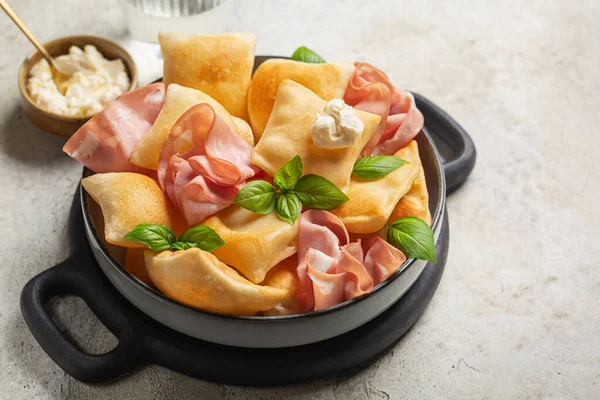
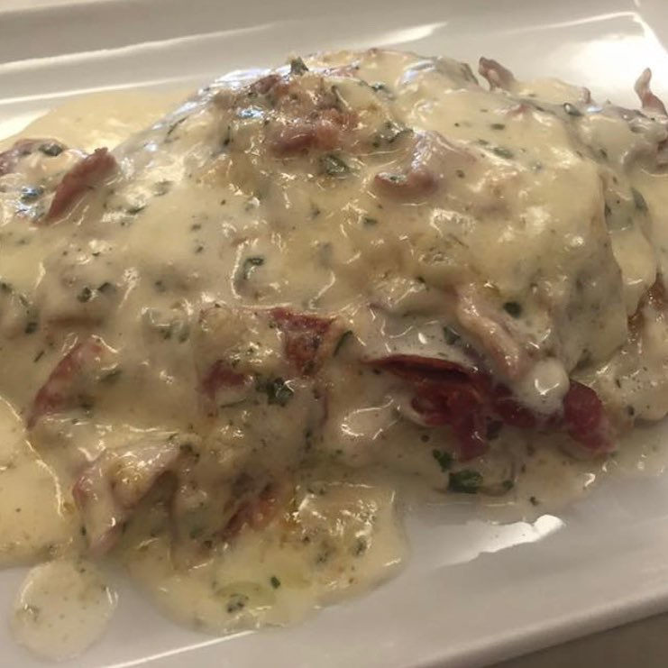
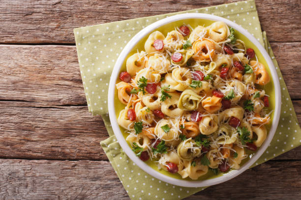

Conoce mas sobre Bolonia
Las comidas más típicas son...
La crescentina o crescenta es un tipo de pan característico de los Apeninos modenenses, conocido también como tigella. Se trata de un producto alimentario tradicional protegido con los nombres de tigella modenses, tigèla modenese, crescentina modenese y cherscènta modenses.
La cotoletta alla Bolognese es un plato típico de Bolonia. También se la conoce con el nombre de "Petroniana", en honor a un obispo del siglo V y patrón de la ciudad de Bolonia, Petronius. Consiste en una chuleta de ternera rebozada con huevos, harina y pan rallado.
Tortellini es una variedad de pasta con forma de anillo, compuesta por una capa de masa enrollada y unida por sus extremos, que suele estar rellena de carne, queso o verduras. Hay distintas formas de servirlos, ya sea en caldo, en salsa o con crema.
Algunos de sus rincones
Via Castiglione, 7
Es un museo global e interactivo que, además de documentar la historia local, está lleno de referencias a otros museos de la ciudad
P.za di Porta Ravegnana
Las torres de Bolonia son edificaciones de origen medieval ubicadas en dicha ciudad de la región de Emilia-Romaña.
Via Santo Stefano, 24
Iglesia que se encuentra compuesta por siete iglesias que rodean la plaza de nombre homónimo
Via di San Luca, 36
Consiste en un trayecto fascinante a través de 666 arcadas hasta llegar al Santuario de Nuestra Señora de San Luca.